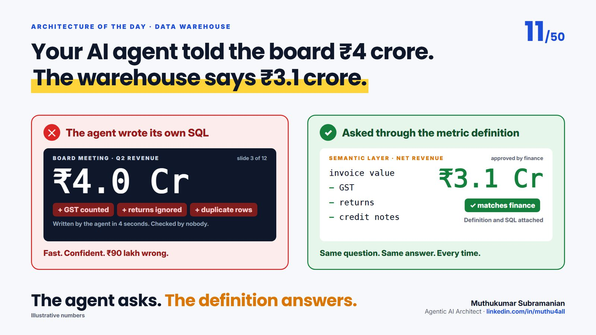

Your AI Agent Told the Board ₹4 Crore. The Data Warehouse Says ₹3.1 Crore.
By Muthukumar Subramanian · Agentic AI Architect

A textile exporter in Tiruppur. Quarterly board meeting. The MD types into the new AI assistant: "What was our revenue last quarter?"
The answer comes back in four seconds. ₹4 crore. It goes on a slide.
Then the CFO opens the finance report, built from the same data warehouse. ₹3.1 crore.
Nobody in the room could explain the ₹90 lakh gap. That's worse than being wrong. (The company and its numbers are illustrative. I've seen versions of this meeting more than once.)
Here's my uncomfortable take: the AI didn't make a mistake. Nobody ever wrote down what "revenue" means.
Day 11 opens Phase 2 of this series. The next ten days are about data, because no agent is smarter than the numbers it can find.
The architecture today
A data warehouse is the company's official memory. Every night, jobs pull data out of Tally or SAP, the billing system, the POS and the CRM. They clean it and load it into neat fact and dimension tables. Dashboards and finance reports read from there.
It works because a few analysts know the rules. Revenue is counted on invoice date, not order date. GST isn't revenue. Returns and credit notes come off. Cancelled orders don't count.
Those rules live in report formulas, in old SQL, and in two people's heads. Not in one place a machine can read.
Where AI plugs in now: a semantic layer, not raw tables
The tempting shortcut is text-to-SQL straight on the warehouse. The model sees forty tables, guesses the joins and writes a query. It looks brilliant in a demo.
That's how you get ₹4 crore. In this example, the agent's own query included GST, ignored returns, counted cancelled orders, and doubled some rows through a bad join. Every query ran. Every query was wrong.
The fix is a layer that most companies skipped: a semantic layer. You write each business metric down once, as code: net revenue, gross margin, active customer, DSO. The agent doesn't pick tables. It picks a metric, a time period and a filter. The layer turns that into SQL that finance has already approved.
👉 [IMAGE: A-day11-2-in-article-architecture.png]
Caption: The warehouse stays as it is. The agent only talks to the semantic layer, which holds the metric definitions finance approved. Grey is what you already have. Amber is new.
Three rules I'd start with:
→ Read-only, metrics-only. The agent's database role can't see raw tables at all.
→ Show the working. Every answer carries the metric definition and the SQL behind it.
→ Verified questions. The top 50 questions the board actually asks are tested against finance's numbers before go-live.
👉 [IMAGE: A-day11-3-in-article-the-gap.png]
Caption: Where the ₹90 lakh came from. Four rules the agent didn't know. All figures illustrative.
Where it's heading with agents
Today a manager asks the question. In two or three years, most questions to the warehouse will come from other agents. A collections agent checks DSO before chasing a customer. A pricing agent checks margin by SKU. A forecasting agent pulls last year's festive-season sales.
When hundreds of agents ask every hour, the semantic layer stops being a BI feature. It becomes the contract between your business and your agents.
The vendors are moving that way. Snowflake now recommends semantic views for Cortex Analyst. Google grounds Looker's conversational analytics in LookML, and says PayPal took it to more than 3,000 users through Claude Desktop and Looker's MCP server. dbt Labs open-sourced MetricFlow under Apache 2.0 as part of the Open Semantic Interchange effort, so one definition can travel across tools.
Honestly, I don't know which standard will win. I do know the company that writes its definitions down first will switch tools far more easily.
Watch it work
Same question, two paths. One gets blocked.
👉 [GIF: A-day11-4-in-article-one-answer.gif]
Caption: The plain-English question goes through the metric definition, never straight to the raw tables. All figures illustrative.
Pros
→ One number for the whole company, whether a human or an agent asks
→ The warehouse, ETL jobs and finance reports stay exactly as they are
→ Every answer can be audited: the metric, the filters and the SQL are all on record
Cons
→ Someone has to agree what "revenue" means. That's a meeting with finance, sales and audit, and it's harder than any code
→ The agent can only answer what's been defined. New questions need a new metric, which takes days, not seconds
→ Definitions rot. A new GST rule or a new sales channel changes the logic, and the layer needs an owner who updates it
The opportunity
Every mid-size Indian company with a warehouse, or even a big Tally export, will want to ask it questions in plain English, and in Tamil or Hindi too. Most of them don't have a single written metric definition.
That's the market: conversational BI for every business user, and before that, a "metric dictionary" service. Sit with finance for three weeks, write the 30 metrics that matter as code, test them against last year's audited numbers, and then switch the agent on.
The person who does this is a new kind of role. Some call it a context engineer: someone whose job is to give the agent the right meaning, not just the right data. Others call them an analytics FDE, a forward deployed engineer who sits with the client's finance team. The titles are still settling. The work is real, and a team that knows both GST and SQL can charge well for it.
Tools to try
Snowflake Cortex Analyst with semantic views · Databricks Genie · Copilot in Power BI with Fabric data agents · Looker conversational analytics with Gemini · dbt Semantic Layer and the open-source MetricFlow.
Your turn 👇
For board numbers, would you trust an AI agent's own SQL or only a governed metric? One word.
Tag the analyst who's the only person in your company who knows what "revenue" really means.
Day 11 of 50 · follow along. Tomorrow: Day 12 · You Paid ₹1 Crore to Store Data Your AI Agent Can't Use.